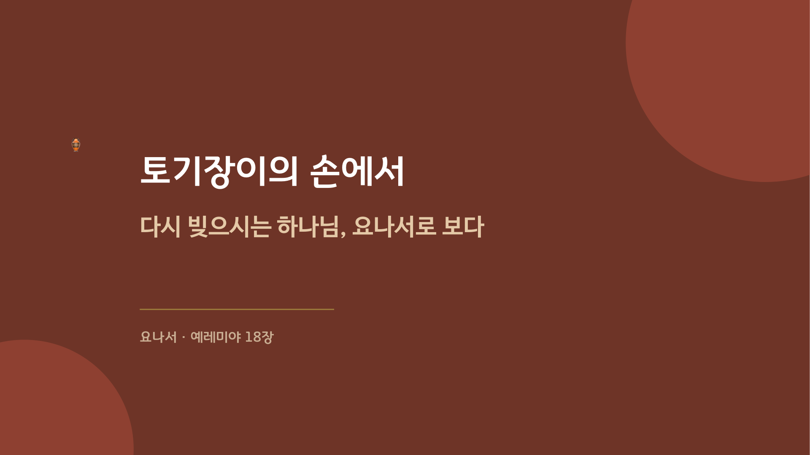

2026.09.13 주일 설교 묵상
토기장이의 손에서
찌그러져도 버리지 않고 다시 빚으시는 하나님을, 일곱 개의 장면 속에서 하루씩 짚어보는 여정
주일 설교 다시보기
본문: 예레미야 18:1-6 · 요나 1-4장 · 설교자: 황을호 교수
토기장이는 손에서 터진 그릇을 던져 버리지 않고, 그 진흙을 다시 치대어 새 그릇을 빚습니다. 하나님은 불순종하며 도망친 요나에게도 다시, 또다시 기회를 주셨습니다. 우리를 향한 하나님의 계획도 한 번의 실패로 끝나지 않습니다.
토기장이는 손에서 터진 그릇을 던져 버리지 않고, 그 진흙을 다시 치대어 새 그릇을 빚습니다. 하나님은 불순종하며 도망친 요나에게도 다시, 또다시 기회를 주셨습니다. 우리를 향한 하나님의 계획도 한 번의 실패로 끝나지 않습니다.
주일 설교 슬라이드
1 / 37

좌우 화살표를 눌러 슬라이드를 넘겨보세요.
설교 영상은 업로드되는 대로 추가됩니다.
매일 이렇게 새로워지세요
- 실패를 마지막으로 삼지 않기: 한 번 찌그러졌다고 나 자신을 던져버리지 않고, 다시 빚으시는 하나님의 손을 기다려 봅니다.
- 미워하는 사람을 향한 하나님의 마음 헤아리기: 내가 등 돌리고 싶은 사람도 하나님이 구원하기 원하시는 사람일 수 있음을 기억합니다.
- 내 불편함과 다른 생명의 무게 견주지 않기: 박넝쿨 그늘보다 사람의 생명이 크다는 것을 하루에 한 번 되새깁니다.
- 다시 주어진 기회를 미루지 않기: 오늘 나에게 다시 주어진 순종의 기회가 무엇인지 찾아 실제로 옮겨봅니다.
요일별 묵상 여정
월요일
제목
성경구절